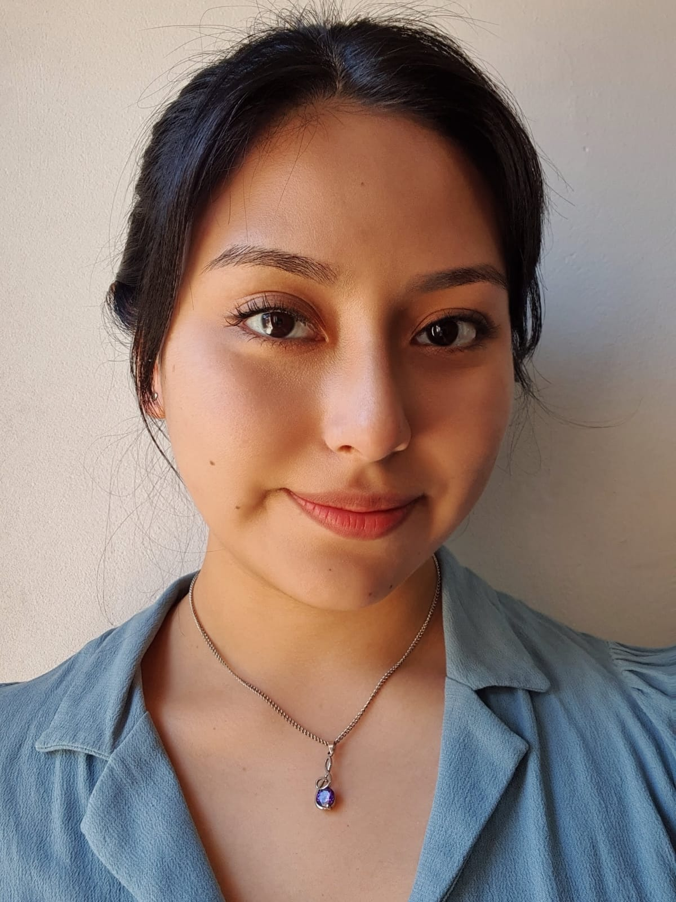

Soy una profesional del Desarrollo de Software especializada en RPA(Robotic Process Automation),
tengo experiencia colaborando con equipos multidisciplinarios de diversos sectores tales como Laboratorios, Petroleras, Farmacéuticas, Tecnología/Telecomunicaciones y Bancarios.
Cuento con amplia experiencia coordinando con los propietarios de los procesos, desarrolladores y equipos de IT para implementar proyectos.
Teniendo como foco las necesidades del cliente y apoyándome en metodologías para lograr un ambiente dinámico que permita obtener los mejores resultados.
Me considero detallista y expeditiva. Valoro mi tiempo de ocio, disfruto mi familia y de estar al aire libre.
Busco retos donde pueda seguir aportando mis habilidades y conocimientos en este campo.